Venture Forge HQ / Partner
Fuel the forge. Forge the future.
- 🤝 Ways
- Attend / Invite Give / Sponsor Get Connected
- 💳 Pay by
- ACH · Check · Online (Zeffy)
- ✉️ Contact
- sponsor@ventureforgeaustin.org
We believe work is a God-given calling, and that when the sparks of innovation meet the fire of generosity, ventures are forged that transform lives and advance the Kingdom. Partner with us as a sponsor or donor and help make the summit — and the ecosystem behind it — possible.
Ways to Partner
Join what God is doing through Venture Forge Austin.
Join us as an attendee, or invite a founder, investor, or leader in your network who should be in the room.
Support Venture Forge financially as a sponsor or through generosity that helps make this event, and the ecosystem behind it, possible.
Learn more and get connected at ventureforgeaustin.org. We are building an enduring ecosystem, not a one-day event.
💼 Sponsorship opportunities
Board viewBelow are the available sponsorship opportunities — each with limited availability. Please reach out to reserve your spot.
Ways to pay
If you prefer to pay via ACH transfer, use the bank information below to submit your payment directly.
- Bank
- University Federal Credit Union
- Routing #
- 314977405
- Account #
- 1800901942757
You can also mail your payment by check to the address below. Please make all checks payable to
SVC Community (Memo: VF Austin)
13207 Stillforest St.
Austin, TX 78729
Make a gift
Every contribution — at any level — shapes what the summit becomes.
Underwrite scholarships that help Christ-centered entrepreneurs move from vision to action at the summit.
Fund the roundtables, working sessions, and year-round convenings that equip founders and galvanize the ecosystem.
Direct catalytic capital toward ventures that transform lives, strengthen communities, and advance the common good.